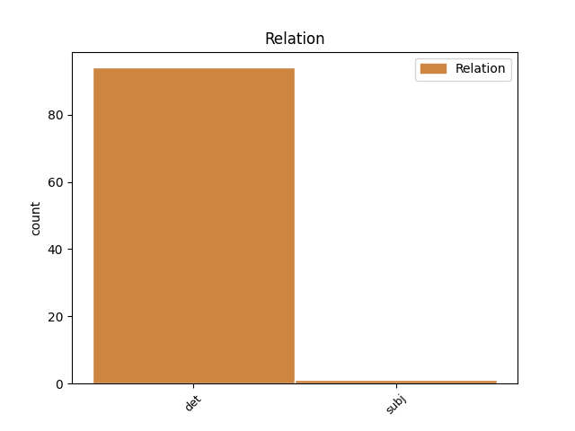
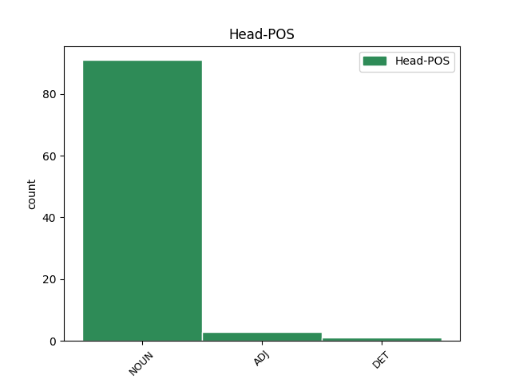
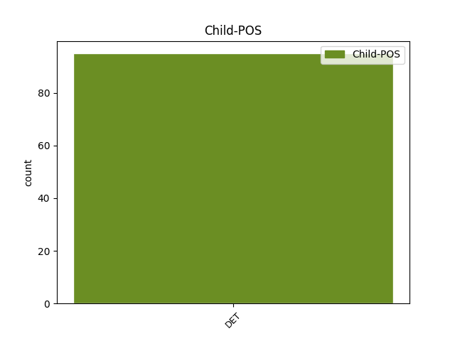

Distribution of features within this leaf



Agreement Rules sorted by frequency.
- When the dependent token is the determiner(det) of the head token, and the head token is NOUN and the dependent token is DET.
1 Ён _ _ _ _ 0 _ _ _
2 прыставаў _ _ _ _ 0 _ _ _
3 да _ _ _ _ 0 _ _ _
4 свайго _ _ _ _ 0 _ _ _
5 даўганогага _ _ _ _ 0 _ _ _
6 дзядзькі _ _ _ _ 0 _ _ _
7 Жырафа _ _ _ _ 0 _ _ _
8 і _ _ _ _ 0 _ _ _
9 пытаўся _ _ _ _ 0 _ _ _
10 , _ _ _ _ 0 _ _ _
11 чаму _ _ _ _ 0 _ _ _
12 ў _ _ _ _ 0 _ _ _
13 яго _ _ _ _ 0 _ _ _
14 на _ _ _ _ 0 _ _ _
15 скуры _ _ _ _ 0 _ _ _
16 плямы _ _ _ _ 0 _ _ _
17 , _ _ _ _ 0 _ _ _
18 і _ _ _ _ 0 _ _ _
19 высачэзны _ _ _ _ 0 _ _ _
20 дзядзька _ _ _ _ 0 _ _ _
21 Жыраф _ _ _ _ 0 _ _ _
22 даваў _ _ _ _ 0 _ _ _
23 яму _ _ _ _ 0 _ _ _
24 за _ _ _ _ 0 _ _ _
25 гэта _ _ _ _ 0 _ _ _
26 грымака _ _ _ _ 0 _ _ _
27 сваім свой DET JJL Case=Ins|Gender=Masc|Number=Sing 33 det _ _
28 цвёрдым _ _ _ _ 0 _ _ _
29 , _ _ _ _ 0 _ _ _
30 як _ _ _ _ 0 _ _ _
31 камень _ _ _ _ 0 _ _ _
32 , _ _ _ _ 0 _ _ _
33 капытом капыт NOUN NN Animacy=Inan|Case=Ins|Gender=Masc|Number=Sing 0 _ _ _
34 . _ _ _ _ 0 _ _ _
1 Беларуская _ _ _ _ 0 _ _ _
2 мова _ _ _ _ 0 _ _ _
3 і _ _ _ _ 0 _ _ _
4 беларускі _ _ _ _ 0 _ _ _
5 дух _ _ _ _ 0 _ _ _
6 вогуле _ _ _ _ 0 _ _ _
7 не _ _ _ _ 0 _ _ _
8 такія такi DET DT Case=Nom|Number=Plur|PronType=Dem 9 det _ _
9 мёртвыя мёртвы ADJ JJL Case=Nom|Degree=Pos|Number=Plur 0 _ _ _
10 , _ _ _ _ 0 _ _ _
11 як _ _ _ _ 0 _ _ _
12 можа _ _ _ _ 0 _ _ _
13 падавацца _ _ _ _ 0 _ _ _
14 . _ _ _ _ 0 _ _ _
1 Мiж _ _ _ _ 0 _ _ _
2 iншым _ _ _ _ 0 _ _ _
3 , _ _ _ _ 0 _ _ _
4 такiя такiе DET DT Animacy=Inan|Case=Nom|Gender=Masc|Number=Plur 6 subj _ _
5 " _ _ _ _ 0 _ _ _
6 нюансы нюанс NOUN NN Animacy=Inan|Case=Nom|Gender=Masc|Number=Plur 0 _ _ _
7 " _ _ _ _ 0 _ _ _
8 ўзнiкаюць _ _ _ _ 0 _ _ _
9 пастаянна _ _ _ _ 0 _ _ _
10 . _ _ _ _ 0 _ _ _
1 Але _ _ _ _ 0 _ _ _
2 вось _ _ _ _ 0 _ _ _
3 у _ _ _ _ 0 _ _ _
4 той _ _ _ _ 0 _ _ _
5 самы _ _ _ _ 0 _ _ _
6 час _ _ _ _ 0 _ _ _
7 , _ _ _ _ 0 _ _ _
8 даўным-даўно _ _ _ _ 0 _ _ _
9 , _ _ _ _ 0 _ _ _
10 жыў _ _ _ _ 0 _ _ _
11 адзін адзін DET _ Animacy=Anim|Case=Nom|Gender=Masc|Number=Sing 12 det _ _
12 такі такі DET _ Case=Nom|Gender=Masc|Number=Sing 0 _ _ _
13 Слон _ _ _ _ 0 _ _ _
14 , _ _ _ _ 0 _ _ _
15 або _ _ _ _ 0 _ _ _
16 , _ _ _ _ 0 _ _ _
17 лепш _ _ _ _ 0 _ _ _
18 сказаць _ _ _ _ 0 _ _ _
19 , _ _ _ _ 0 _ _ _
20 Слонік _ _ _ _ 0 _ _ _
21 , _ _ _ _ 0 _ _ _
22 які _ _ _ _ 0 _ _ _
23 быў _ _ _ _ 0 _ _ _
24 страшэнна _ _ _ _ 0 _ _ _
25 дапытлівы _ _ _ _ 0 _ _ _
26 , _ _ _ _ 0 _ _ _
27 і _ _ _ _ 0 _ _ _
28 каго _ _ _ _ 0 _ _ _
29 , _ _ _ _ 0 _ _ _
30 бывала _ _ _ _ 0 _ _ _
31 , _ _ _ _ 0 _ _ _
32 ні _ _ _ _ 0 _ _ _
33 ўбачыць _ _ _ _ 0 _ _ _
34 , _ _ _ _ 0 _ _ _
35 да _ _ _ _ 0 _ _ _
36 ўсіх _ _ _ _ 0 _ _ _
37 прыстае _ _ _ _ 0 _ _ _
38 з _ _ _ _ 0 _ _ _
39 роспытамі _ _ _ _ 0 _ _ _
40 . _ _ _ _ 0 _ _ _
Disagree Examples:
1 Менавіта _ _ _ _ 0 _ _ _
2 гэтыя гэты DET _ Case=Nom|Number=Plur 4 det _ _
3 дзве _ _ _ _ 0 _ _ _
4 дзяўчыны дзяўчына NOUN _ Animacy=Anim|Case=Gen|Gender=Fem|Number=Sing 0 _ _ _
5 прадставяць _ _ _ _ 0 _ _ _
6 нашу _ _ _ _ 0 _ _ _
7 краіну _ _ _ _ 0 _ _ _
8 ў _ _ _ _ 0 _ _ _
9 фінале _ _ _ _ 0 _ _ _
10 міжнароднага _ _ _ _ 0 _ _ _
11 конкурсу _ _ _ _ 0 _ _ _
12 , _ _ _ _ 0 _ _ _
13 які _ _ _ _ 0 _ _ _
14 сёлета _ _ _ _ 0 _ _ _
15 пройдзе _ _ _ _ 0 _ _ _
16 ў _ _ _ _ 0 _ _ _
17 Расіі _ _ _ _ 0 _ _ _
18 . _ _ _ _ 0 _ _ _
1 Праўда _ _ _ _ 0 _ _ _
2 , _ _ _ _ 0 _ _ _
3 рабiлася _ _ _ _ 0 _ _ _
4 агаворка _ _ _ _ 0 _ _ _
5 , _ _ _ _ 0 _ _ _
6 што _ _ _ _ 0 _ _ _
7 ўлiчыць _ _ _ _ 0 _ _ _
8 абсалютна _ _ _ _ 0 _ _ _
9 ўсе увесь DET DT Case=Nom|Number=Plur|PronType=Tot 10 det _ _
10 нюансы нюанс NOUN NN Animacy=Inan|Case=Acc|Gender=Masc|Number=Plur 0 _ _ _
11 , _ _ _ _ 0 _ _ _
12 якiя _ _ _ _ 0 _ _ _
13 могуць _ _ _ _ 0 _ _ _
14 узнiкнуць _ _ _ _ 0 _ _ _
15 за _ _ _ _ 0 _ _ _
16 гэты _ _ _ _ 0 _ _ _
17 час _ _ _ _ 0 _ _ _
18 , _ _ _ _ 0 _ _ _
19 немагчыма _ _ _ _ 0 _ _ _
20 . _ _ _ _ 0 _ _ _
1 І _ _ _ _ 0 _ _ _
2 толькi _ _ _ _ 0 _ _ _
3 ў _ _ _ _ 0 _ _ _
4 Мiнску _ _ _ _ 0 _ _ _
5 быў _ _ _ _ 0 _ _ _
6 адзначаны _ _ _ _ 0 _ _ _
7 летась _ _ _ _ 0 _ _ _
8 рост _ _ _ _ 0 _ _ _
9 рэальных _ _ _ _ 0 _ _ _
10 заробкаў _ _ _ _ 0 _ _ _
11 работнiкаў _ _ _ _ 0 _ _ _
12 аховы _ _ _ _ 0 _ _ _
13 здароўя _ _ _ _ 0 _ _ _
14 на _ _ _ _ 0 _ _ _
15 1,4 _ _ _ _ 0 _ _ _
16 працэнта _ _ _ _ 0 _ _ _
17 , _ _ _ _ 0 _ _ _
18 што _ _ _ _ 0 _ _ _
19 з'яўляецца _ _ _ _ 0 _ _ _
20 сведчаннем _ _ _ _ 0 _ _ _
21 увагi _ _ _ _ 0 _ _ _
22 да _ _ _ _ 0 _ _ _
23 нашай наш DET PRP$ Case=Dat|Gender=Fem|Number=Sing 24 det _ _
24 галiны галiна NOUN _ Animacy=Inan|Case=Gen|Gender=Fem|Number=Sing 0 _ _ _
25 з _ _ _ _ 0 _ _ _
26 боку _ _ _ _ 0 _ _ _
27 сталiчных _ _ _ _ 0 _ _ _
28 уладаў _ _ _ _ 0 _ _ _
29 . _ _ _ _ 0 _ _ _
1 Гэты _ _ _ _ 0 _ _ _
2 нос _ _ _ _ 0 _ _ _
3 матляўся _ _ _ _ 0 _ _ _
4 ва _ _ _ _ 0 _ _ _
5 ўсе увесь DET DT Case=Nom|Number=Plur 6 det _ _
6 бакі бок NOUN NN Animacy=Inan|Case=Acc|Gender=Masc|Number=Plur 0 _ _ _
7 , _ _ _ _ 0 _ _ _
8 але _ _ _ _ 0 _ _ _
9 ўсё _ _ _ _ 0 _ _ _
10 ж _ _ _ _ 0 _ _ _
11 быў _ _ _ _ 0 _ _ _
12 нікуды _ _ _ _ 0 _ _ _
13 не _ _ _ _ 0 _ _ _
14 варты _ _ _ _ 0 _ _ _
15 : _ _ _ _ 0 _ _ _
16 хіба _ _ _ _ 0 _ _ _
17 можна _ _ _ _ 0 _ _ _
18 такім _ _ _ _ 0 _ _ _
19 носам _ _ _ _ 0 _ _ _
20 падняць _ _ _ _ 0 _ _ _
21 што-небудзь _ _ _ _ 0 _ _ _
22 з _ _ _ _ 0 _ _ _
23 зямлі _ _ _ _ 0 _ _ _
24 ? _ _ _ _ 0 _ _ _